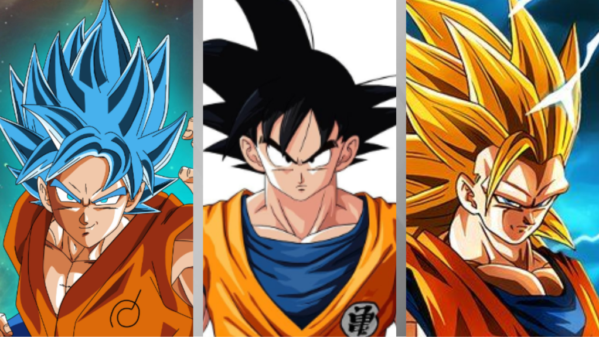

Este é Son Goku!
Nascido no planeta Vegeta, mas muito novo chegou a terra para dominar o mundo ou para salvar ele
Últimas Notícias

Grande luta goku vs Jiren
Goku é escolhido para lutar contra o Jiren para salvar o mundo
8 de out. de 2017

Clássico o melhor DB?
Existem pessoas que acreditam que o clássico é o melhor dragon ball.
Abril de 2025

Relembre as principais versões do Goku
Personagem já teve forma de gorila, criança e até morto.
09/05/24

Goku UI!?
Como ele consegue lutar tão calmo!?
Fevereiro de 2024